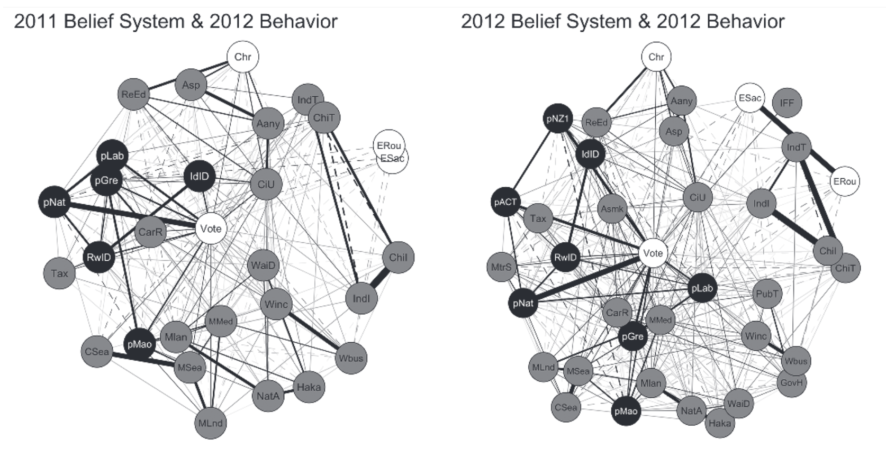

Belief System Dynamics
Can we understand belief systems as systems?

The typical approach in the attitudes literature is to study one attitude at a time. However, our work on worldview conflict shows that people’s attitudes and values are interdependent. What happens when we treat an attitude as interdependent, rather than as a separate entity disconnected from other attitudes and values? Our research program on belief system dynamics does just this. In particular, We explore how the connections between people’s attitudes and values – their belief systems – affect how attitudes develop and change.
We use multiple methods, including computational models, experiments, panel studies, and their combinations to document belief system dynamics. This work gives us insight into the central attitudes of societal conflict, the most effective routes to persuasion, and inspiration for new approaches to promote democratic resiliance.
Related publications
- Czarnek, G., Jasko, K., Dudek, I., Brandt, M. J., & Piotrowska, M. (in press). Beyond content: Psychological structure of political beliefs. Personality and Social Psychology Bulletin doi | pdf | code | data
- Triki, A., Cassario, A. L., & Brandt, M. J. (2026). American liberals and conservatives have different cognitive styles, but (mostly) respond the same to party cues. Journal of Experimental Social Psychology, 127, 104994. doi | pdf | code | data
- Van Noord, J., Turner-Zwinkels, F., Kesberg, R., Brandt, M. J., Easterbrook, M. J., Kuppens, T., & Spruyt, B. (2025). The nature and structure of European belief systems: Exploring the varieties of belief systems across 23 European countries. European Sociological Review, 41, 143-161. doi | pdf
- Cassario, A. L. & Brandt, M. J. (2025). Testing theories of threat, conservatism, and individual difference: Little evidence of personality based individual differences in ideological responses to threat. Social Psychological and Personality Science, 16, 657-668. doi | pdf | code | data
- Hasan, K. F. A., Yustisia, W., Milla, M. N., & Brandt, M. J. (2025). What is the most important issue in the political belief system in Indonesia? A network analysis of attitude and voting behavior in 2014 and 2019. Makara Human Behavior Studies in Asia, 29, 115-136. doi | pdf
- Kteily, N. S.+ & Brandt, M. J.+ (2025). Ideology: Psychological similarities and differences across the ideological spectrum re-examined. Annual Review of Psychology, 76, 501-529. +shared authorship doi | pdf
- Thompson, J. L., Cassario, A., Vallabha, S., Rice, S., Gnall, S., Carrillo, A., Solanki, P., Brandt, M. J, & Wetherell, G. A. (2025) Stress testing predictive models of ideological prejudice. PLoS ONE, 20, e0334152 doi | pdf
- Turner-Zwinkels, F. M., van Noord, J., Kesberg, R., Garcia-Sánchez, E., Brandt, M. J., Kuppens, T., Easterbrook, M. J., Turner-Zwinkels, T., Gorska, P. Marchlewska, M., & Smets, L. (2025). Affective polarization and political belief systems: The role of political identity, and the content and structure of political beliefs. Personality and Social Psychology Bulletin, 51, 222-238. doi | pdf | code
- Turner-Zwinkels, F. M. & Brandt, M. J. (2024). Ideology strength vs. party identity strength: Ideology strength is the key predictor of attitude stability. Personality and Social Psychology Bulletin, 51, 125-138. doi | pdf | code
- Bergh, R. & Brandt, M. J. (2023). Generalized prejudice: Lessons about social power, ideological conflict, and levels of abstraction. European Review of Social Psychology, 34, 92-126. doi | pdf
- Brandt, M. J. (2022). Measuring the belief system of a person. Journal of Personality and Social Psychology, 123, 830-853. doi | pdf | code | data
- Brandt, M. J. & Morgan, G. S. (2022). Between-person methods provide limited insight about within-person belief systems. Journal of Personality and Social Psychology, 123, 621-635. doi | pdf | code | data
- Turner-Zwinkels, F. M. & Brandt, M. J. (2022). Belief system networks can be used to predict where to expect dynamic constraint. Journal of Experimental Social Psychology, 100, 104279. doi | pdf
- Brandt, M. J., He, J., & Bender, M. (2021). Registered report: Testing ideological asymmetries in measurement invariance. Assessment, 28, 687-708. doi | pdf | code
- Brandt, M. J., & Sleegers, W. W. A. (2021). Evaluating belief system networks as a theory of political belief system dynamics. Personality and Social Psychology Review, 25, 159-185. doi | pdf | code
- Brandt, M. J. (2020). Estimating and examining the replicability of belief system networks. Collabra: Psychology, 6, 24. doi | pdf | code
- Crawford, J. T. & Brandt, M. J. (2020). Ideological (a)symmetries in prejudice and intergroup bias. Current Opinion in Behavioral Sciences, 34, 40-45. doi | pdf
- Kubin, E. & Brandt, M. J. (2020). Identifying the domains of ideological similarities and differences in attitudes. Comprehensive Results in Social Psychology, 4, 53-77. doi | pdf | code | data
- Brandt, M. J., Sibley, C., & Osborne, D. (2019). What is central to belief system networks. Personality and Social Psychology Bulletin, 45, 1352-1364. doi | pdf | code
- Voelkel, J. G., & Brandt, M. J. (2019). The effect of ideological identification on the endorsement of moral values depends on the target group. Personality and Social Psychology Bulletin, 45, 851-863. doi | pdf | code | data
- Rutjens, B. T., & Brandt, M. J. (Eds.). (2018). Belief systems and the perception of reality. Abington, UK: Routledge. doi | pdf
- Brandt, M. J. (2017). Predicting ideological prejudice. Psychological Science, 28, 713-722. doi | pdf | code | data
- Collins, T. P., Crawford, J. T., & Brandt, M. J. (2017). No evidence for ideological asymmetry in dissonance avoidance: Unsuccessful close and conceptual replications of Nam, Jost, and van Bavel (2013). Social Psychology, 48, 123-134. doi | pdf
- Crawford, J. T., Brandt, M. J., Inbar, Y., Chambers, J. R., & Motyl, M. (2017). Social and economic ideologies differentially predict prejudice across the political spectrum, but social issues are most divisive. Journal of Personality and Social Psychology, 112, 383-412. doi | pdf
- Brandt, M. J., Wetherell, G., & Crawford, J. T. (2016). Moralization and intolerance of ideological outgroups. In Joseph P. Forgas, Lee Jussim, & Paul A. M. van Lange (Eds.) The Social Psychology of Morality (pp. 239-256). New York: Routledge. doi | pdf
- Kay, A. C. & Brandt, M. J. (2016). Ideology and intergroup inequality: Emerging directions and trends. Current Opinion in Psychology, 11, 110-114. doi | pdf
- Henry, P. J., Wetherell, G., & Brandt, M. J. (2015). Democracy as a legitimizing ideology. Peace and Conflict: Journal of Peace Psychology, 21, 648-664. doi | pdf
- Brandt, M. J., Reyna, C., Chambers, J., Crawford, J., & Wetherell, G. (2014). The ideological-conflict hypothesis: Intolerance among both liberals and conservatives. Current Directions in Psychological Science, 23, 27-34. doi | pdf
- Wetherell, G., Brandt, M. J., & Reyna, C. (2013) Discrimination across the ideological divide: The role of perceptions of value violations and abstract values in discrimination by liberals and conservatives. Social Psychological and Personality Science, 4, 658-667. doi | pdf